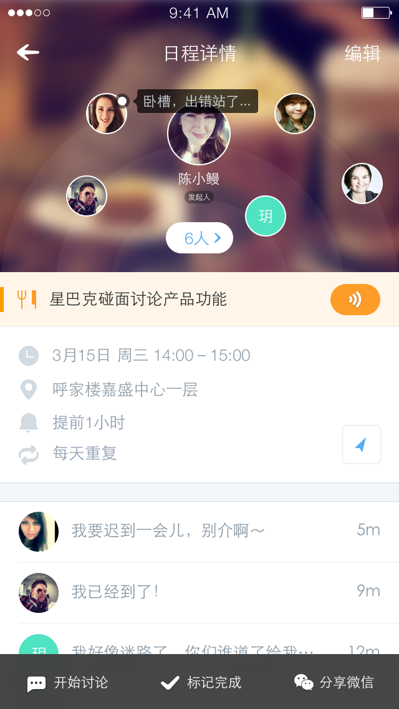
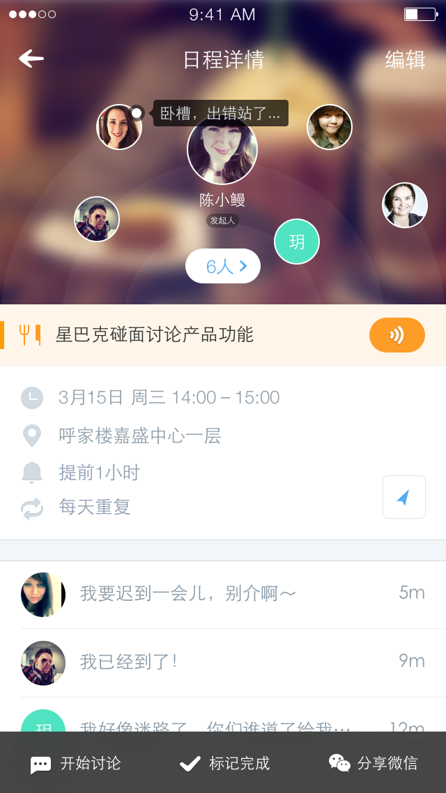

日程详情和讨论-开发需求文档
1 概述
日程详情页的入口是日程视图和消息列表
日程详情页面存在三种状态：未参与状态；管理员状态和非管理员已经参与状态
- 未参与状态
- 创建者状态
- 非创建者已参与状态
日程详情页面内容和完整添加页面基本一致，包含以下部分
- 创建者
- 参与者
- 主题
- 时间
- 地点
- 提醒
- 重复
- 日程讨论
- 描述
- 选择tab
完整的日程添加页面如下图所示：
注意
- 语音日程需要提供听语音的按钮
- 地点能够识别出的情况下，提供导航按钮
2 不同状态的介绍
2.1 未参与状态
未参与状态下，有以下几点需要注意：
- 看不到其他参与者信息
- 看不到讨论信息
- 看以看到创建者
- 可以看到一共几条评论
- 提供：待定，接受和拒绝按钮
- 点击待定相当于返回
- 点击接受：出现loading，然后弹框提示参加成功，tab变成已加入的样式
- 点击拒绝：出现弹框询问是否确定拒绝，点击确定后提示拒绝成功，然后返回到上一页（返回之后可以建一个消失的动画）
2.2 创建者状态和参与者状态
创建者和参与者进入详情页面之后显示内容一样
创始人点击编辑进入完整添加页面，参与者点击编辑只能修改提醒时间
详情页面效果如下图所示
 

3 不同功能区域的详细介绍
3.1 参与者区域
参与者区域最多显示6个头像，包括创建者
当向上滑动时，发生以下动画
- 创建者头像逐渐变小并上移
- 参与者头像逐渐消失
- 显示人数的白色框逐渐消失
滑动后结果如下图所示：
请注意以下几点：
- 不同人数头像的位置不同
- 如果有讨论，则显示最新的讨论
- 点击头像，进入个人主页
3.2 主题区域
主题区域的显示方式和试图部分基本一致，背景颜色和日程分类相关
当日程包含语音时，主题后方有语音按钮
主题最长为48个中文字（每2个英文字母大小和1个中文字）
3.3 时间、地点、提醒和重复
有则显示，没有则不显示~
如果地点可以被识别，则提供导航按钮
3.4 讨论
讨论部分有以下几种状态：
- 单人日程无评论：不显示讨论
- 单人日程有评论：显示3条（或小于3条）讨论内容，提供进入讨论页面入口
- 多人日程未参与：有讨论时显示讨论数，没有讨论时显示“暂无讨论”
- 多人日程已参与：有讨论是显示最近的3条讨论并给出讨论入口；没有讨论时显示“分享内容给其他参与者”
如果用户在讨论中发的是图片、文件等，则显示“分享了一张图片/文件”
3.5 描述
无描述的情况下，不显示描述；有描述时显示完整的描述
3.6 选择tab
日程详情的选择tab分为三种情况：
- 未加入
- 已加入未完成
- 已加入已完成
效果如下图所示：